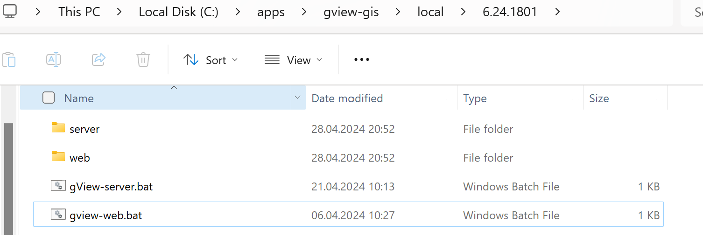

Lokal ausführen (Desktop Modus)¶
Sowohl gView.WebApps als auch gView.Server können lokal auf dem Desktop gestartet werden.
Der Einsatz von gView.Server lokal macht hauptsächlich für Testzwecke Sinn.
Bemerkung
Ein möglicher Anwendungsfall wäre jedoch, den gView.Server innerhalb einer Offline-Lösung zu verwenden. Dazu müssten auf den Offline-Geräten folgende Komponenten vorhanden sein:
Kartenserver (gView.Server)
Alle notwendigen Daten (z.B. in einer SQLite-Datenbank)
Eine WebGIS-Lösung, die über den Kartenserver Karten darstellt.
Da gView.WebApps die früheren Desktop-Anwendungen gView.Carto und gView.DataExplorer ablöst, kann es sinnvoll sein, diese Applikation nur bei Bedarf zu starten.
Dazu muss man in das Verzeichnis wechseln, in dem im vorherigen Schritt die Anwendung deployed wurde (hier: C:\apps\gview-gis\local\6.24.1801)
Bemerkung
Die letzten beiden Unterverzeichnisse entsprechen dem Profil und der Versionsnummer des zuvor erstellten Deployments.
In diesem Verzeichnis sollten sich folgende Dateien und Ordner befinden:
gview-server.batstartet den gView.Server lokal.gview-web.batstartet gView.WebApps (gView.Carto, gView.DataExplorer) lokal.
Wenn man gview-web.bat startet, erhält man folgende Ausgabe:

Hier wird ausgegeben, unter welcher URL die Anwendung aufgerufen werden soll (hier: http://localhost:5051).
Bemerkung
Die URL kann über die Datei gview-web.bat geändert werden. Dazu muss die Datei mit einem
Texteditor geöffnet werden.
Wenn man die URL in einem Browser eingibt (z.B. Firefox), sollte die Anwendung angezeigt werden.

Bemerkung
Manche Browser leiten http://-Anfragen automatisch auf https:// um. Dies funktioniert leider
nicht für lokale Anwendungen. Das kann ein Grund sein, warum die Anwendung nicht angezeigt wird.
Abhilfe schaffen kann die Verwendung eines anderen Browsers (z.B. Firefox).
Da wir im vorigen Schritt beim Deploy Benutzername und Passwort definiert haben, muss man sich in der Anwendung erst authentifizieren, um die Programme nutzen zu können.
Dazu auf Login klicken und sich als admin anmelden. Danach stehen alle Programme zur Verfügung:

Bemerkung
Die Kachel Local gView Server kann nur erfolgreich gestartet werden, wenn der Server
mit gview-server.bat gestartet wurde.
Bemerkung
Die Kachel Used Memory dient nur dem Zweck, die Speicherbelegung zu optimieren, wenn gView.WebApps
viele Ressourcen verbraucht. Ein Klick auf das Symbol in der Kachel führt ein GC.Collect()
aus.
Klickt man auf eine Kachel, wird die entsprechende Anwendung im aktuellen Browser-Tab geöffnet. Möchte man die Anwendung in einem neuen Tab öffnen, muss man auf das Pfeilsymbol in der entsprechenden Kachel klicken.
Startet man die Datei gview-server.bat, ist das Verhalten ähnlich wie oben beschrieben.
In der Ausgabe wird die URL angezeigt, unter der der gView.Server läuft:
Öffnet man die URL im Browser (hier: http://localhost:5050), sollte folgendes angezeigt werden:

Bemerkung
Ruft man den gView.Server das erste Mal auf, sind in der Regel noch kein Administrator-User definiert. Der gView.Server agiert unabhängig von gView.WebApps und greift nicht auf die Benutzereinstellungen dieser Anwendung zu.
Es empfiehlt sich, nach dem Einloggen auf die rote Kachel Manage zu klicken und hier einen User und ein Passwort einzugeben. Dieser erste User wird dann automatisch der Administrator für den gView Server.